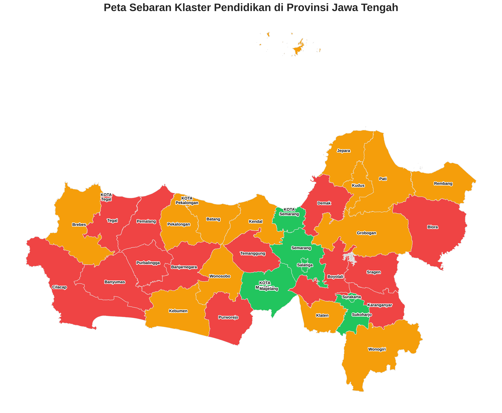

Peta Sebaran Klaster Pendidikan

Tantangan Pendidikan
Pendidikan Menengah
Pendidikan Tinggi
Detail Wilayah
Nama Wilayah
Informasi Klaster
Cara Membaca Grafik Radar:
Grafik ini menunjukkan profil pendidikan suatu wilayah. Jari-jari (nilai r) menunjukkan skor ternormalisasi dari 0 (terendah di Jateng) hingga 1 (tertinggi di Jateng). Semakin luas area yang terbentuk, semakin baik profil pendidikannya. Untuk RMG, nilai yang lebih rendah lebih baik, sehingga skalanya dibalik pada grafik ini.